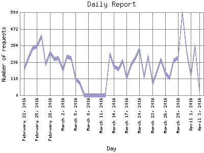

Analog 5.24
Analog 5.24 Report Magic for Analog 2.13
Report Magic for Analog 2.13The Daily Report identifies the activity for each day within the reporting period. Remember that one page hit can result in several server requests as the images for each page are loaded.

| Day | Number of requests | Percentage of the requests | |
|---|---|---|---|
| 1. | April 3, 2016 | 18 | 0% |
| 2. | April 2, 2016 | 349 | 0.8% |
| 3. | April 1, 2016 | 142 | 0.3% |
| 4. | March 31, 2016 | 301 | 0.7% |
| 5. | March 30, 2016 | 585 | 0.12% |
| 6. | March 29, 2016 | 267 | 0.6% |
| 7. | March 28, 2016 | 247 | 0.6% |
| 8. | March 27, 2016 | 123 | 0.2% |
| 9. | March 26, 2016 | 155 | 0.3% |
| 10. | March 25, 2016 | 255 | 0.6% |
| 11. | March 24, 2016 | 167 | 0.3% |
| 12. | March 23, 2016 | 85 | 0.1% |
| 13. | March 22, 2016 | 274 | 0.6% |
| 14. | March 21, 2016 | 131 | 0.2% |
| 15. | March 20, 2016 | 330 | 0.8% |
| 16. | March 19, 2016 | 266 | 0.6% |
| 17. | March 18, 2016 | 220 | 0.4% |
| 18. | March 17, 2016 | 124 | 0.2% |
| 19. | March 16, 2016 | 246 | 0.6% |
| 20. | March 15, 2016 | 186 | 0.4% |
| 21. | March 14, 2016 | 208 | 0.4% |
| 22. | March 13, 2016 | 294 | 0.7% |
| 23. | March 12, 2016 | 0 | 0% |
| 24. | March 11, 2016 | 0 | 0% |
| 25. | March 10, 2016 | 0 | 0% |
| 26. | March 9, 2016 | 0 | 0% |
| 27. | March 8, 2016 | 0 | 0% |
| 28. | March 7, 2016 | 0 | 0% |
| 29. | March 6, 2016 | 86 | 0.1% |
| 30. | March 5, 2016 | 115 | 0.2% |
| 31. | March 4, 2016 | 265 | 0.6% |
| 32. | March 3, 2016 | 274 | 0.6% |
| 33. | March 2, 2016 | 180 | 0.3% |
| 34. | March 1, 2016 | 263 | 0.6% |
| 35. | February 29, 2016 | 258 | 0.6% |
| 36. | February 28, 2016 | 305 | 0.7% |
| 37. | February 27, 2016 | 222 | 0.4% |
| 38. | February 26, 2016 | 420 | 0.10% |
| 39. | February 25, 2016 | 349 | 0.8% |
| 40. | February 24, 2016 | 338 | 0.8% |
| 41. | February 23, 2016 | 273 | 0.6% |
| 42. | February 22, 2016 | 190 | 0.4% |
Most active day November 27, 2012 : 1,592 requests handled.
Daily average: 236 requests handled.
This report was generated on April 3, 2016 02:21.
Report time frame August 10, 2010 08:36 to April 3, 2016 04:37.
| Web statistics report produced by: | |
| Analog 5.24 | Report Magic for Analog 2.13 |